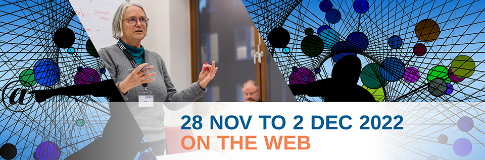
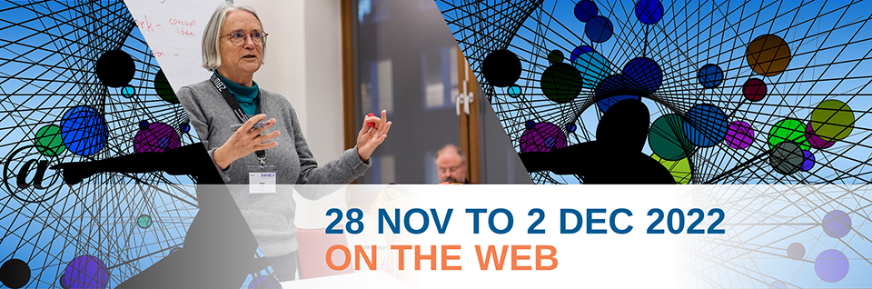

Speakers
Kayt Ahnberg
Katherine Ahnberg, MLS (she/her), serves as the User Experience Researcher/Designer at the University of Pennsylvania Libraries. Advocating for users across a diverse service population, her foci are data informed design and evidence-based practice. Contact: ahnberg@upenn.edu.
Stacy Allison-Cassin 
Stacy Allison-Cassin is a Citizen of the Métis Nation of Ontario with kinship connections to the Georgian Bay Métis community, and Indigenous community in Canada. An Assistant Professor at the School of Information Management at Dalhousie University, Stacy engages in work and research related to metadata, knowledge organization, and Indigenous matters in libraries and the wider cultural heritage sector. She is also an active member of the Wikidata and open data community. Stacy is a passionate advocate for change in information structures and metadata systems within the library profession. She is the Chair of the International Association of Library Associations Indigenous Matters Standing Committee and the community chair for the Language Preservation and Instruction community and a member of Council of the National Indigenous Knowledge and Language Association, and Indigenous-led association centred in Canada. Stacy also has extensive professional experience as a librarian, serving in a variety roles in the libraries at York University.
José Calvo Tello
José Calvo Tello works as a researcher and subject librarian at the Göttingen State and University Library responsible for Digital Humanities, Romance Studies, and History of Art. His research is focused on the application and development of computational methods such as Machine Learning and Natural Language Processing applied to Romance Literatures and library records.
Beth Picknally Camden
Since 2005, Beth Picknally Camden has been the Patricia and Bernard Goldstein Director of Information Processing, responsible for technical services at the University of Pennsylvania Libraries. Previously, she held positions at University of Virginia and University of Notre Dame. Beth holds a MS in Library Science from the Catholic University of America and a BA in English from the University of Notre Dame. She is involved in professional organizations including the American Library Association (ALA), ALA Core, and the Program for Cooperative Cataloging (PCC). Beth is chair of the PCC Standing Committee on Training (SCT) and a member of the PCC Policy Committee (PoCo). Beth is engaged in international linked-data initiatives, and chairs the Share-VDE Advisory Council. For additional information, please see: http://bpcamden.wordpress.com
Sophy Shu-Jiun Chen
Sophy Shu-Jiun Chen is the Associate Research Fellow at the Institute of History and Philology, Academia Sinica, and also the Executive Secretary of Academia Sinica Center for Digital Cultures (ASCDC). She received her M.A. degree in Information Studies from the University of Sheffield, UK in 1997, and Ph.D. degree in Library and Information Science from the National Taiwan University in 2012. Dr. Chen is also an Adjunct Assistant Professor of Graduate Institute of Library, Information and Archival Studies, National Chengchi University. Her research interests include digital cultural heritage, metadata, ontologies, Linked Data, online exhibition, and digital humanities. She initiated the Research Project of Chinese-language AAT (Art & Architecture Thesaurus) with the Getty Research Institute, USA since 2008, and the Linked Open Data Lab in Aacdemia Sinica.
L.P. Coladangelo
L.P. Coladangelo (he/him) is a doctoral student in the College of Communication and Information at Kent State University in Kent, Ohio. He also currently serves as Project Manager of Digital Scriptorium 2.0, a project to redevelop a national union catalog of premodern manuscripts in U.S. collections as Linked Open Data. He holds an MLIS from Kent State University’s School of Information and a BA from Sarah Lawrence College in Bronxville, New York. His current research interests include knowledge organization of cultural heritage, metadata, information representation of folk traditions, digital humanities, semantic technologies, and the information and organizational behaviors of cultural heritage and leisure communities of practice.
Crystal Yragui
Crystal Yragui is a Science Cataloger at the University of Washington Libraries, and is the project manager for the MARC21-to-RDA/LRM/RDF Mapping Project.
Paul Duchesne
Paul Duchesne is a software engineer with the Open Science Lab at the Technische Informationsbibliothek in Hannover, specialising in Wikibase and Linked Open Data for cultural data. He is also an active member of the FIAF Linked Open Data Task Force, including contributing heavily to the forthcoming FIAFcore ontology for film archives.
Christian Erlinger
Christian Erlinger works as project manager at ZHB Luzern (Lucerne Central and University Library, Switzerland) for ZentralGut.ch, a repository for the digitized cultural heritage of Central Switzerland. He had studied urban planning and political science in Vienna and is engaged to foster GLAM contributions in all Wikimedia projects.
Steven Folsom
Steven Folsom is the Head of Metadata Design and Operations at Cornell University Library. Their career has focused on sustainable metadata practices to aid in discovery and access across digital and physical collections. As a member of the Linked Data for Libraries (LD4L) and Linked Data for Production (LD4P) Mellon Foundation funded grants, he participates in the development efforts of tools and data models meant to aid the adoption of linked data in libraries.
Nuno Freire
Nuno Freire holds a PhD in Informatics and Computer Engineering from the University of Lisbon. His main domain of interest is his cultural heritage, and works at the Europeana R&D, with research interests in novel methods for data aggregation, and in data modelling for the maintenance and evolution of the Europeana Data Model. He has been a member of the Program Committees of major international conferences in the area of digital libraries: JCDL (Joint Conference on Digital Libraries) and TPDL (Theory and Practice in Digital Libraries), SEMANTiCS and reviewer for the International Journal on Digital Libraries, and the Journal on Computing and Cultural Heritage.
Moritz Fürneisen
Moritz Fürneisen is a research engineer at ZBW, where he develops and evaluates algorithms for automated subject indexing. Moritz has also been involved in the design of an architecture for integrating automated subject indexing into production.
Theodore Gerontakos
Theodore Gerontakos is the Head of the Metadata and Cataloging Initiatives Unit of the Cataloging and Metadata Services Department at the University of Washington Libraries, and is the project supervisor for the MARC21-to-RDA/LRM/RDF Mapping Project.
Jim Hahn
As the first Head of Metadata Research at University of Pennsylvania Libraries, Jim works collaboratively across the Libraries, developing a vision for the services, technologies and policies to enhance discovery of collections, and incorporating international standards and best practices for linked data and metadata. He plays a critical role in the Penn Libraries’ participation in the LD4 community and the Share-VDE project, as well as developing future partnerships. Before coming to the Penn Libraries Jim worked at the University of Illinois at Urbana-Champaign. At the Illinois Libraries Jim had roles in technology focused research and in the development of creative uses of technologies in research libraries. He led a number of successful and novel grant projects which integrate library services and emerging technology. He holds an M.S. in Library and Information Science and a C.A.S. in Library and Information Science both from the University of Illinois at Urbana-Champaign.
Patrick Hochstenbach
Patrick Hochstenbach is a digital architect at Ghent University Library and PhD researcher at the Knowledge on Web scale department of IDLab at Ghent University. He is currently researching decentralised communication systems using semantic web technologies. Patrick has been working for over 25 years in digital libraries in Europe and the United States. He was the creator or the SFX linking software in cooperation with Herbert Van de Sompel. He was involved in library standards such as OpenURL, the OAI-PMH Static RepositorY and the MPEG-21 Adore framework. He is also in the programming committee of the ELAG conference. Patrick has a background in physics and is also known as the artist of many FAIR and Research Data Management cartoons.
Eero Hyvönen
Eero Hyvönen is professor of semantic media technology at the Aalto University, Department of Computer Science, and director of Helsinki Centre for Digital Humanities (HELDIG) at the University of Helsinki. A major recent theme (since 2001) in his research has been the Semantic Web and linked (open) data technologies. He has been developing with his Semantic Computing Research Group (SeCo) the national semantic web infrastructure in Finland and its applications in different areas, such as Cultural Heritage and Digital Humanities. Eero Hyvönen has published some 500 research articles and books and has got several international and national awards. He acts in the editorial boards of several international journals and has co-chaired and acted in the program committees of tens of major conferences.
Juho Inkinen
I work as an Information Systems Specialist at the National Library of Finland. I have been developing Annif and working on related tasks since 2019.
Filip Jakobsen
Filip Jakobsen is the founder and CEO of Samhæng, which is a specialized UX consultancy designing digital tools for handling complex data. With a focus on work tools for libraries, culture and the arts. Samhæng co-designs software with the people who end up using it: Staff and patrons. Samhæng has led co-design efforts on library projects like FOLIO, ReShare, Share-VDE and the Library of Congress BIBFRAME Editor. More information can be found on https://samhaeng.com/about
Huda Khan
Huda Khan works in software development at Cornell University. She is currently participating in the Linked Data: Closing the loop (LD4P3) grant with a focus on the use of linked data for enhancing discovery. Additionally, she has been involved with projects that employ Blacklight and GeoBlacklight. She has a joint Ph.D. in Computer Science and Cognitive Science from the University of Colorado at Boulder.
Mona Lehtinen
I work with the Annif project and am happy to tackle various tasks such as project coordination, community and corpora building and testing the new features of Annif.
Sven Lieber
Sven Lieber works as data manager for the Royal Library of Belgium (KBR) where he supports the improvement of data quality, mainly by using computational methods and Linked Data. Sven currently works for the BELTRANS project examining book translation flows in Belgium between French and Dutch in the period 1970-2020, involving the creation of a FAIR corpus of contemporary Belgian authors and their works. He studied Computer Science at the University of Freiburg in Germany and pursued a PhD related to Linked Data at the University of Ghent in Belgium. During his PhD, Sven worked in several national projects together with industry and academia applying the use of Linked Data. He published in the Semantic Web Journal and at major Semantic Web conferences such as ISWC or ESWC.
Martin Lovell
Martin Lovell is a principal full stack developer at Yale University Library. Martin works at Yale Library developing systems for the digital library, discovery, library processes, and metadata conversion and management. He has been developing software for over 20 years.
Tobias Malmsheimer
Tobias has a M.Sc. in computer science and is currently responsible for the IT infrastructure in the Japanese Visual Media Graph project.
Enrique Manjavacsa
Enrique Manjavacsa is currently a post-doctoral researcher in Computational Linguistics at the University of Leiden. In his current work, he seeks to adapt and apply modern large scale language models like BERT in order to facilitate access to complex information from unstructured corpora in the Humanities.
Joachim Neubert
Joachim Neubert works as a scientific software developer at the ZBW – Leibniz Information Centre for Economics. He published the STW Thesaurus for Economics and the 20th Century Press Archives as websites based on Linked Open Data and developed linked data driven web services for economics. He is working on the integration of knowledge organization systems into applications and on mappings between such systems, and is exploring the potentials of Wikidata (e.g., in WikiProject 20th Century Press Archives) as a linking hub for resources on the web.
Zhuo Pan
Zhuo Pan is a student employee at the University of Washington Libraries assigned to the MARC21-to-RDA/LRM/RDF Mapping Project, and a current Master of Library and Information Sciences student at the University of Washington Information School. Theodore and Zhuo are both contributors to the mapping work, and are leading authors of the transformation code, while Crystal is focused on project logistics and mapping work.
Telma Peura
Telma Peura is a Digital Humanities master student from Helsinki University, working as a research assistant for the BookSampo project at the Semantic Computing Research Group SeCo at Aalto University. Previously, she has worked in digital literary studies as part of the Fabula-NET project at Aarhus University.
Adrian Pohl
Adrian (@acka47@openbiblio.social) has been working at the North Rhine-Westphalian Library Service Centre (hbz) in Cologne, Germany since 2008. He is leading the Open Infrastructure team whose work focuses on open standards, tools and processes for the publication of structured data on the web. Often collaborating with others, the Open Infrastructure team works on a wide range of services and tools: lobid, OER Search Index (OERSI), SkoHub, Metafacture, NWBib.
Christoph Poley
Christoph Poley is a software and data engineer. He is responsible for the Leipzig department “Automatic Indexing; Online Publications” at the German National Library. Previously he worked in scientific libraries, e.g. as head of the discovery service LIVIVO at ZB MED in Cologne and for a project at the Electronic Journals Library in Regensburg. Before that he studied applied computer science at Chemnitz University of Technology.
Jennifer Erin Proctor
Ms Proctor is a PhD Candidate in Information Studies at the University of Maryland College Park. Her research focuses on increasing accessibility and diversity of digital collections using AI, Natural Language Processing, and Linked Data. Her favorite collections to work with include photography of daily life of underrepresented populations and preservation of lost and endangered languages.
Artem Reshetnikov
Artem is a deep learning researcher at Barcelona Supercomputing Center. Being a researcher he received big experience in Computer Vision and Natural Language Processing and applying it to his work. All of his life he was curious about history and art and finished some online courses. For a long time, he was thinking about how to join his two main passions: machine learning and art. The solution is the project where he works now. Saint George on a Bike is a project about the enrichment of metadata of paintings using Deep Learning and NLP approaches. His current area of interest is the intersection of NLP and Deep Learning and applying semantic metadata for improving object detection and caption generation. He graduated from the Autonomous University of Barcelona in 2019 with a Master’s Degree in Engineering. Before he worked for several commercial projects focused on Data Analysis, Computer Vision, and Anomaly detection in marketing and retails in such companies as Indra or Tecnocom in Spain. The projects mainly were based on the idea of applying deep learning in traffic counting using Computer Vision, analysis of time series data for anomaly behavior of clients.
Lozana Rossenova
Lozana Rossenova (PhD, London South Bank University, UK) is a digital designer and researcher based in Berlin. In 2021, she completed a PhD degree at the Centre for the Study of the Networked Image in collaboration with Rhizome, a leading international born-digital art organization. Her research focused on questions related to data presentation and performativity in Linked Open Data environments. Rossenova is particularly interested in open source and community-driven approaches to digital infrastructure and archive design. She is an active member of the Wikidata and Wikibase open source development communities, and a Steering Committee member of OpenRefine, an open source data management tool with wide adoption in heritage, research and digital humanities communities. Currently she works as a Postdoc Researcher at the Open Science Lab in TIB Hannover, working on the NFDI4Culture project for a national research infrastructure of cultural heritage data.
Steffen Rörtgen
Steffen Rörtgen (@steffenr42, @steffenr42@openbiblio.social) is working as a web developer on open education projects in the open infrastructure group of the North Rhine-Westphalian Library Service Centre. Steffen is especially interested in open web technologies. He tries to solves problems concerning heterogenous education metadata with the help of semantic web approaches. Steffen is also contributing to the open source project SkoHub-Vocabs, a lightweight tool for publishing SKOS vocabularies with a HTML view and at the same time in a machine-readable format. Together with Adrian Pohl he will conduct a workshop for it. He is also researching on machine-readable curricula and framework data, so if this is also of interest for you (or any other topic mentioned), feel free to reach out!
Daniel Scott
Daniel is an associate librarian at Laurentian University in Canada. His research focuses on the intersection of linked data and libraries. He helped develop the Bibliographic Extensions for schema.org and implemented schema.org in the default Evergreen, Koha, and VuFind web UIs. With Stacy Allison-Cassin, Daniel was an early advocate for the adoption of Wikidata by libraries as a read-write linked data store, and he customized Evergreen to dynamically incorporate musician data from Wikidata into its detailed record display. Most recently, he helped assess the readiness for and understanding of BIBFRAME by Canadian librarians (short answer: not ready, very little understanding).
Eduards Skvireckis
Eduards Skvireckis is a data management expert at the National Library of Latvia and a Ph.D. student at the University of Latvia specializing in Neo-Latin literature. He is a researcher in the RIGA LITERATA: Humanist Neo-Latin Heritage of Riga within European Respublica Literaria and the Latvian Memory Institution Data in the Digital Space: Connecting Cultural Heritage projects. His main interest is a knowledge representation at the abstract and theoretical level, focusing on cultural heritage and language data modeling, and knowledge organization systems.
Lucia Sohmen
Lucia Sohmen finished her M.A. in library and information science at the Humboldt-Universität zu Berlin in 2017. Since then, she has worked in various projects at the German National Library of Science and Technology’s Open Science Lab, including the development of an open access image search engine. She currently works on the NFDI4Culture project as a researcher and project coordinator. Her current interests are data modelling, data transformation and the wikiverse.
Osma Suominen
Osma Suominen is working as an information systems specialist at the National Library of Finland. He is currently working on automated subject indexing, in particular the Annif tool and the Finto AI service, as well as the publishing of bibliographic data as Linked Data. He is also one of the creators of the Finto.fi thesaurus and ontology service and is leading development of the Skosmos vocabulary browser used in Finto. Osma Suominen earned his doctoral degree at Aalto University while doing research on semantic portals and quality of controlled vocabularies within the FinnONTO series of projects.
Timothy A. Thompson
Tim Thompson works as the Librarian for Applied Metadata Research at Yale University Library. As a metadata practitioner, his work focuses on the implementation of linked data standards and technologies in academic libraries. Over the past six years, he has been active in cooperative efforts such as the Linked Data for Production (LD4P) project.
Katherine Thornton
Kat Thornton works in the Digital Perservation Department at Yale University Library. Kat has been a volunteer editor of the Wikidata project for 10 years. Kat is a co-founder of sciencestories.io, a multimedia bibliography project celebrating the lives of scientists and people working in STEM.
Tina Trillitzsch
Tina Trillitzsch works at the Leibniz Institute for Psychology (ZPID) in Germany. She is in charge of turning the PSYNDEX research literature database into Linked Open Data for the planned PsychPorta search portal, developing a metadata scheme based on BIBFRAME, coordinating the Linked-Data-friendlyness of the new cataloging software PSYNDEX2, and for the migration of existing database records to the new software. Moreover, she is responsible for controlled vocabularies in PSYNDEX, converting existing indexing schemes, creating new ones as needed and enabling their use in both PSYNDEX2, the PsychPorta portal, and the Linked Open Data knowledge graph that it is based on.
Astrid Usong
Astrid Usong is a User Experience Designer with Stanford Libraries. She works in Digital Library Systems and Services to create simple and engaging interfaces for catalogers and library patrons. Recent projects include Sinopia, the student and faculty interface for depositing to our digital repository, and the overhaul of our external library website. Prior to Stanford, she worked in financial services for 20 years.